Romina Pardo
I. Load Libraries and data sets.
II. Filter out all records with missing description.
III. View frequencies of languages in description field.
```
##
## catalan danish english french frisian
## 6 1 80 4 1
## latin middle_frisian nepali rumantsch spanish
## 1 1 1 2 121
```
IV. Create separate data sets for descriptions in english and spanish. Prepare description Field for Text Mining Analysis: lowercase, remove stopwords.
V. Download Description in languages other than english, spanish or french.
29% of Opportunities are Closed (10% Lost and 9% won).
Use of pre-trained open- sourced models provided by UDpipe Community:
https://cran.r-project.org/web/packages/udpipe/vignettes/udpipe-annotation.html
UPOS (Universal Parts of Speech) frequency of occurrence:
## key freq freq_pct
## 1 NOUN 780 50.32258
## 2 VERB 227 14.64516
## 3 ADJ 194 12.51613
Most Occurring Nouns in Descriptions
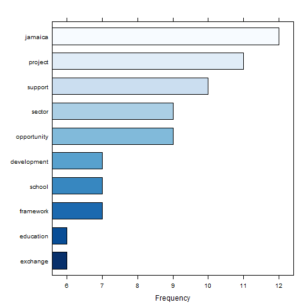
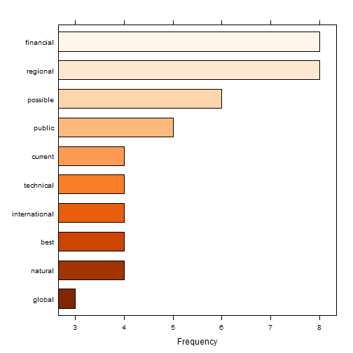
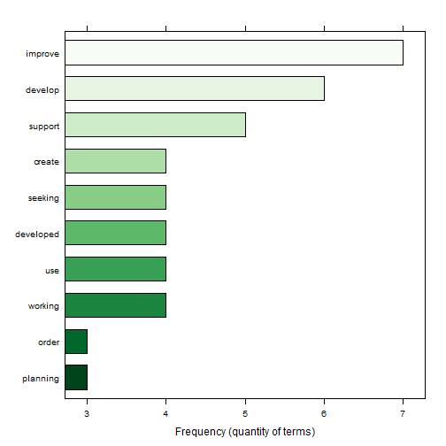
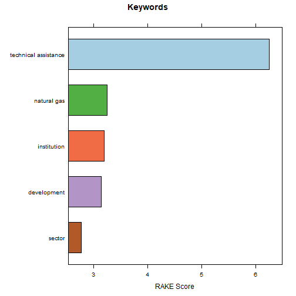
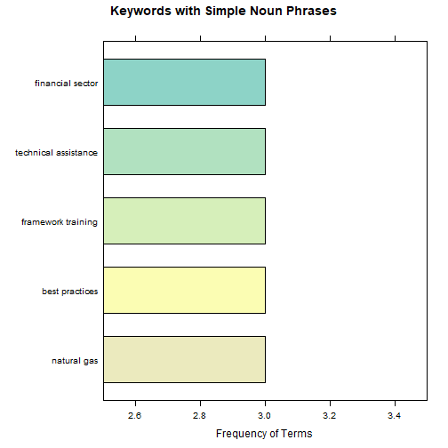
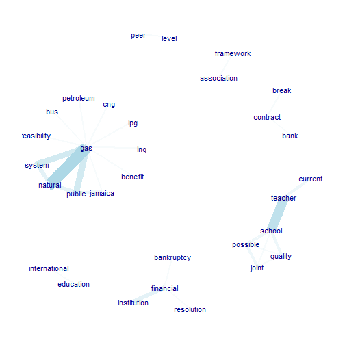
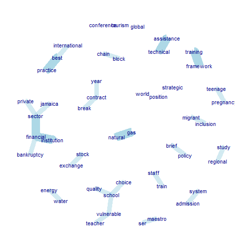
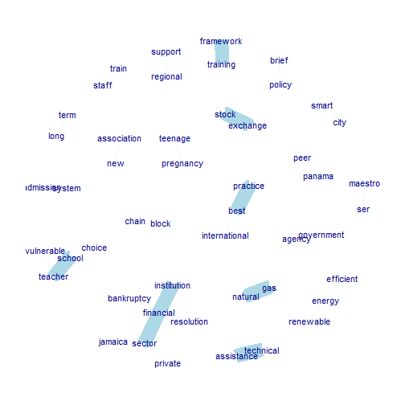
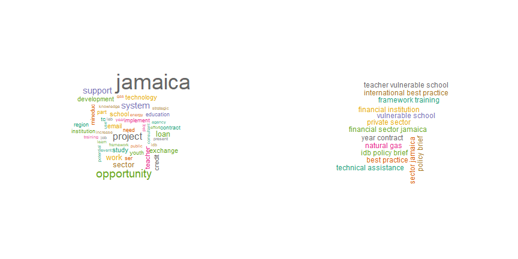
Use of pre-trained open- sourced models provided by UDpipe Community:
https://cran.r-project.org/web/packages/udpipe/vignettes/udpipe-annotation.html
UPOS (Universal Parts of Speech) frequency of occurrence:
## key freq freq_pct
## 1 NOUN 1420 37.24102
## 2 ADJ 743 19.48597
## 3 VERB 586 15.36848
Most Occurring Nouns in Descriptions
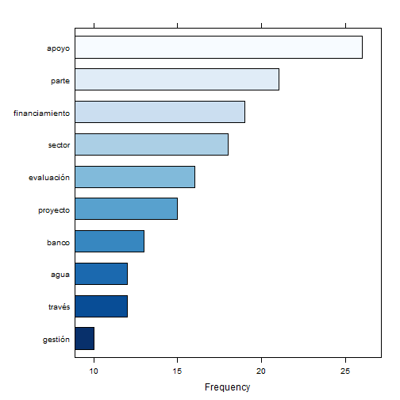
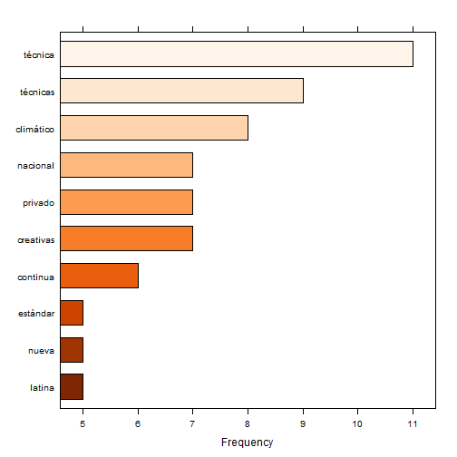
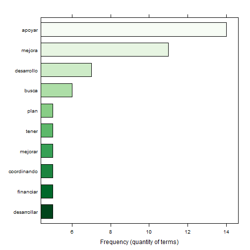
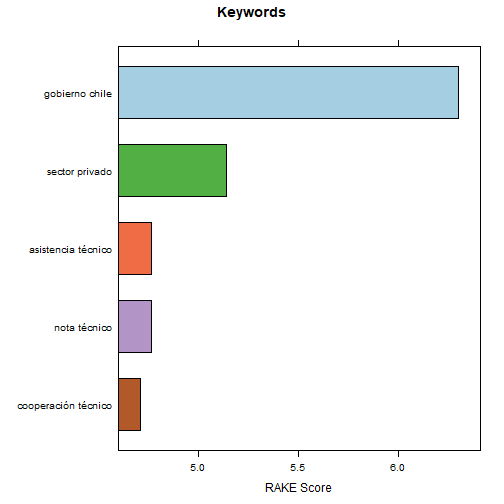
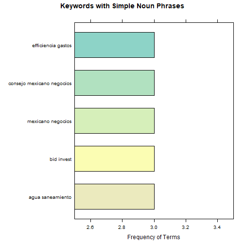
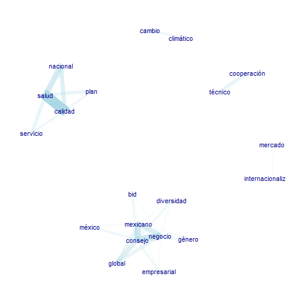
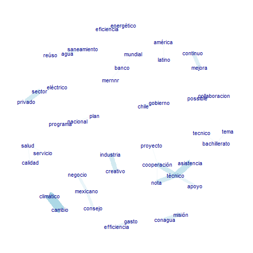
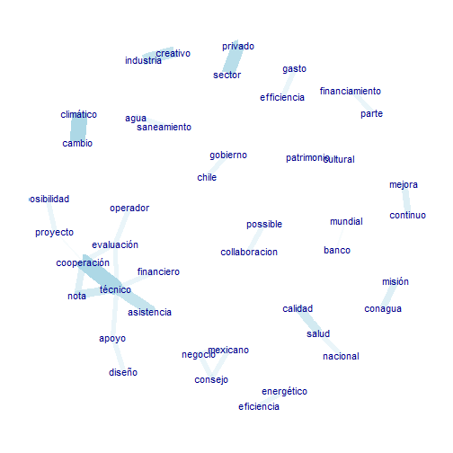
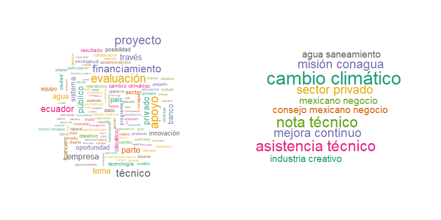